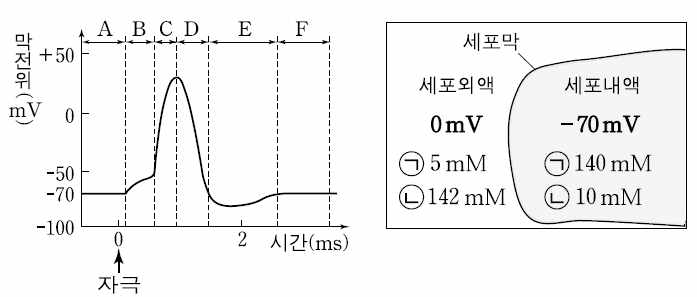
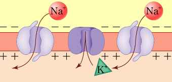
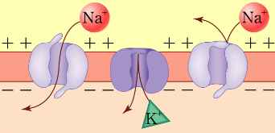
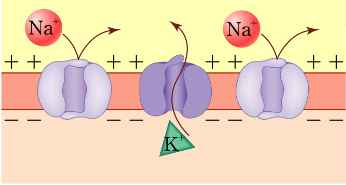
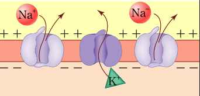
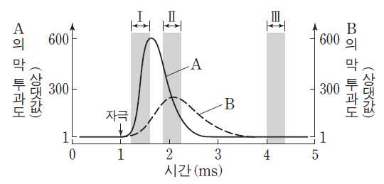

문제 6







단계1. 뉴런 흥분의 전도과정 A-F단계를 말하라.
단계2. 아래 각각 그림순서를 전도과정에 순서와 연관시켜서 설명하라.
ⓐ
ⓑ
2. 문항 및 제시문
관리번호
유형
□ 논술고사 ☑ 면접 및 구술고사
전형명
일반전형
해당 대학의 계열(과목) /
문항번호
자연(생명과학 I, 생명과학II)/생명 과학 6
출제 범위
과학과 교육과정
과목명
생명과학 I, 생명과학II
핵심개념 및 용어
항상성과 몸의 조절
예상 소요시간
7분
1. 일반정보
ⓒ
ⓓ
ⓔ
단계3. 어떤 뉴런에 역치이상의 자극을 주었을 때 이 뉴런 세포막에서 Na+와 K+의 막 투
과도를 나타낸 것이다. A와 B의 이온을 말하고 구간 Ⅰ Ⅱ Ⅲ 과정을 2번 그림들을 사용
하여 설명하시오.